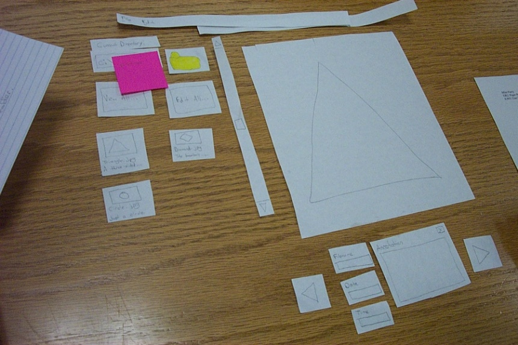
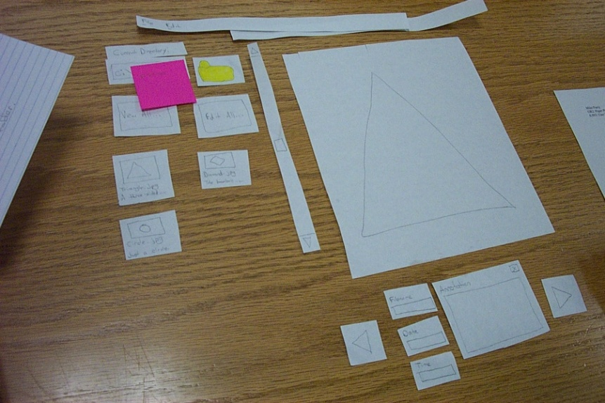

Reading 11: Prototyping
Ghostview | Acrobat |
|---|---|
 | |
 |
 |
On the left is Ghostview, a Unix program that displays Postscript files. Ghostview has no scrollbar. Instead, it scrolls by direct manipulation of the page image. Clicking and dragging the page downward moves the page image upward. That is, when you drag the mouse down, more of the page image come into view at the bottom of the window. Does this make sense? What mental model, or physical analogy, does this correspond to?
On the right is Acrobat, which displays PDF files. Acrobat has scrollbars, but you can also directly manipulate the page image, as in Ghostview - only now clicking and dragging downward moves the page downward, revealing more page image at the top of the window. What mental model does this correspond to?
What if you used both Acrobat and Ghostview frequently (one for PDF, say, and the other for Postscript)?
Which model does a smartphone use for scrolling, and which model do scrollbars and mouse scrollwheels use?
Xerox Star scrollbar |
Original Macintosh scrollbar |
Current Macintosh scrollbar |
|---|---|---|
 |
Let’s look at scrolling some more. Scrollbars have evolved considerably over the history of graphical user interfaces.
The Xerox Star offered the earliest incarnation of a graphical user interface, and its scrollbar already had many of the features we recognize in modern scrollbars, such as a track containing a scrollbar thumb (the handle that you can drag up and down). Even its arrow buttons do the same thing - e.g., pushing on the top button makes more of the page appear at the top of the window, just like the modern scrollbar. But they’re labeled the opposite way - the top button has a down arrow on it. Why is that? What mental model would lead you to call that button down? Is that consistent with the mental model of the scrollbar thumb?
Another interesting difference between the Star scrollbar and modern scrollbars are the - and + buttons, which move by whole pages. This functionality hasn’t been eliminated from the modern scrollbar; instead, the modern scrollbar just drops the obvious affordance for it. You can still click on the track above or below the thumb in order to jump by whole pages. What else has changed in modern scrollbars?
Prototyping
Today we’re going to talk about protototyping: producing cheaper, less accurate renditions of your target interface. Prototyping is essential in the early iterations of a spiral design process, and it’s useful in later iterations too.
We build prototypes for several reasons, all of which largely boil down to cost. First, prototypes are much faster to build than finished implementations, so we can evaluate them sooner and get early feedback about the good and bad points of a design. Second, if we have a design decision that is hard to resolve, we can build multiple prototypes embodying the different alternatives of the decision.
Third, if we discover problems in the design, a prototype can be changed more easily, for the same reasons it could be built faster. Prototypes are more malleable. Most important, if the design flaws are serious, a prototype can be thrown away. It’s important not to commit strongly to design ideas in the early stages of design. Unfortunately, writing and debugging a lot of code creates a psychological sense of commitment which is hard to break. You don’t want to throw away something you’ve worked hard on, so you’re tempted to keep some of the code around, even if it really should be scrapped. (Alan Cooper, “The Perils of Prototyping”, 1994. )
Most of the prototyping techniques we’ll see in this reading actually force you to throw the prototype away. For example, a paper mockup won’t form any part of a finished software implementation. This is a good mindset to have in early iterations, since it maximizes your creative freedom.
An essential property of a prototyping technique is its fidelity, which is simply how similar it is to the finished interface. Low-fidelity prototypes omit details, use cheaper materials, or use different interaction techniques. High-fidelity prototypes are very similar to the finished product.
Fidelity is not just one-dimensional, however. Prototypes can be low- or high-fidelity in various different ways (Carolyn Snyder, Paper Prototyping, 2003).
Breadth refers to the fraction of the feature set represented by the prototype. A prototype that is low-fidelity in breadth might be missing many features, having only enough to accomplish certain specific tasks. A word processor prototype might omit printing and spell-checking, for example.
Depth refers to how deeply each feature is actually implemented. Is there a backend behind the prototype that’s actually implementing the feature? Low-fidelity in depth may mean limited choices (e.g., you can’t print double-sided), canned responses (always prints the same text, not what you actually typed), or lack of robustness and error handling (crashes if the printer is offline).
A diagrammatic way to visualize breadth and depth is shown (following Nielsen, Usability Engineering, p. 94). A horizontal prototype is all breadth, and little depth; it’s basically a frontend with no backend. A vertical prototype is the converse: one area of the interface is implemented deeply. The question of whether to build a horizontal or vertical prototype depends on what risks you’re trying to mitigate. In user interface design, horizontal prototypes are more common, since they address usability risk. But if some aspect of the application is a risky implementation - you’re not sure if it can be implemented to meet the requirements - then you may want to build a vertical prototype to test that. A special case lies at the intersection of a horizontal and a vertical prototype. A scenario shows how the frontend would look for a single concrete task.
Two more crucial dimensions of a prototype’s fidelity are, loosely, its look and its feel. Look is the appearance of the prototype. A hand-sketched prototype is low-fidelity in look, compared to a prototype that uses the same widget set as the finished implementation. Feel refers to the physical methods by which the user interacts with the prototype. A user interacts with a paper mockup by pointing at things to represent mouse clicks, and writing on the paper to represent keyboard input. This is a low-fidelity feel for a desktop application (but it may not be far off for a tablet PC application).

Here’s the same dialog box in both low-fi and high-fi versions. How do they differ in the kinds of things you can test and get feedback about?
Paper Prototypes
Paper prototypes are an excellent choice for early design iterations. A paper prototype is a physical mockup of the interface, mostly made of paper. It’s usually hand-sketched on mutiple pieces, with different pieces showing different menus, dialog boxes, or window elements.
The key difference between mere sketches and a paper prototype is interactivity. A paper prototype is brought to life by a design team member who simulates what the computer would do in response to the user’s “clicks” and “keystrokes”, by rearranging pieces, writing custom responses, and occasionally announcing some effects verbally that are too hard to show on paper. Because a paper prototype is actually interactive, you can actually user-test it: give users a task to do and watch how they do it.
A paper prototype is clearly low fidelity in both look and feel. But it can be arbitrarily high fidelity in breadth at very little cost (just sketching, which is part of design anyway). Best of all, paper prototypes can be high-fidelity in depth at little cost, since a human being is simulating the backend.
Much of the material about paper prototyping in this reading draws on the classic paper by Rettig et al, “Prototyping for tiny fingers” (CACM 1994), and Carolyn Snyder’s book Paper Prototyping: The Fast and Easy Way to Design and Refine User Interfaces (Morgan Kaufmann, 2003).
But why use paper? And why hand sketching rather than a clean drawing from a drawing program?
Hand-sketching on paper is faster. You can draw many sketches in the same time it would take to draw one user interface with code. For most people, hand-sketching is also faster than using a drawing program to create the sketch.
Paper is easy to change. You can even change it during user testing. If part of the prototype was a problem for one user, you can scratch it out or replace it before the next user arrives. Surprisingly, paper is more malleable than digital bits in many ways.
Hand-sketched prototypes in particular are valuable because they focus attention on the issues that matter in early design without distracting anybody with details. When you’re sketching by hand, you aren’t bothered with details like font, color, alignment, whitespace, etc. In a drawing program, you would be faced with all these decisions, and you might spend a lot of time on them - time that would clearly be wasted if you have to throw away this design. Hand sketching also improves the feedback you get from users. They’re less likely to nitpick about details that aren’t relevant at this stage. They won’t complain about the color scheme if there isn’t one. More important, however, a hand-sketch design seems less finished, less set in stone, and more open to suggestions and improvements. Architects have known about this phenomenon for many years. If they show clean CAD drawings to their clients in the early design discussions, the clients are less able to discuss needs and requirements that may require radical changes in the design. In fact, many CAD tools have an option for rendering drawings with a “sketchy” look for precisely this reason.
A final advantage of paper prototyping: no special skills are required. So graphic designers, usability specialists, and even users can help create prototypes and operate them.
Here are the elements of a paper prototyping toolkit.
Although standard (unlined) paper works fine, you’ll get better results from sturdier products like poster board and index cards. Use poster board to draw a static background, usually a window frame. Then use index cards for the pieces you’ll place on top of this background. You can cut the index cards down to size for menus and window internals.
Restickable Post-it Note glue, which comes in a roll-on stick, is a must. This glue lets you make all of your pieces sticky, so they stay where you put them.
Post-it correction tape is another useful tool. It’s a roll of white tape with Post-it glue on one side. Correction tape is used for text fields, so that users can write on the prototype without changing it permanently. You peel off a length of tape, stick it on your prototype, let the user write into it, and then peel it off and throw it away. Correction tape comes in two widths, “2 line” and “6 line”. The 2-line width is good for single-line text fields, and the 6-line width for text areas.
Overhead transparencies are useful for two purposes. First, you can make a selection highlighted by cutting a piece of transparency to size and coloring it with a transparency marker. Second, when you have a form with several text fields in it, it’s easier to just lay a transparency over the form and let the users write on that, rather than sticking a piece of correction tape in every field.
If you have many similar elements in your prototype, a photocopier can save you time.
And, of course, the usual kindergarten equipment: pens, markers, scissors, tape.
A paper prototype should be larger than life-size. Remember that fingers are bigger than a mouse pointer, and people usually write bigger than 12 point. So it’ll be easier to use your paper prototype if you scale it up a bit. It will also be easier to see from a distance, which is important because the prototype lies on the table, and because when you’re testing users, there may be several observers taking notes who need to see what’s going on. Big is good.
Don’t worry too much about color in your prototype. Use a single color. It’s simpler, and it won’t distract attention from the important issues.
You don’t have to render every visual effect in paper. Some things are just easier to say aloud: “the basketball is spinning.” “A progress bar pops up: 20%, 50%, 75%, done.” If your design supports tooltips, you can tell your users just to point at something and ask “What’s this?”, and you’ll tell them what the tooltip would say. But if you actually want to test the tooltip messages you should prototype them on paper.
Figure out a good scheme for organizing the little pieces of your prototype. One approach is a three-ring binder, with different screens on different pages. Most interfaces are not sequential, however, so a linear organization may be too simple. Two-pocket folders are good for storing big pieces, and letter envelopes (with the flap open) are quite handy for keeping menus.
 
Here are some of the prototypes made by an earlier class. Should a paper prototype be hand-sketched or computer-drawn? Generally hand-sketching is better in early design, but sometimes realistic images can be constructive additions.
The first image is a prototype for an interface that will be integrated into an existing program (Eclipse), so the prototype is mostly constructed of modified Eclipse screenshots. The result is very clean and crisp, but also tiny - it’s hard to read from a distance. It may also be harder for a test user to focus on commenting about the new parts of the interface, since the new features look just like Eclipse. A hybrid hand-sketched/screenshot interface might work even better.
The second image shows such a hybrid – an interface designed to integrate into a web browser. Actual screenshots of web pages are used, mainly as props, to make the prototype more concrete and help the user visualize the interface better. Since web page layout isn’t the problem the interface is trying to solve, there’s no reason to hand-sketch a web page.
The third image shows a pure hand-sketched interface that might have benefited from such props – a photo organizer could use real photographs to help the user think about what kinds of things they need to do with photographs. This prototype could also use a window frame - a big posterboard to serve as a static background.

Both of these prototypes have good window frames, but the big one is easier to read and manipulate.

This prototype is even easier to read. Markers are better than pencil. (Whiteout and correction tape can fix mistakes as well as erasers can!) Color is also neat, but don’t bother unless color is a design decision that needs to be tested, as it is in this prototype. If color doesn’t really matter, monochromatic prototypes work just as well.

The first prototype here has lots of little pieces that have trouble staying put. Post-it glue can help with that.
The second prototype is completely covered with a transparency. Users can write on it directly with dry-erase marker, which just wipes off - a much better approach than water-soluble transparency markers. With multiple layers of transparency, you can let the user write on the top layer, while you use a lower layer for computer messages, selection highlighting, and other effects.

Paper is great for prototyping features that would be difficult to implement. This project (a contact manager) originally envisioned showing your social network as a graph, but when they prototyped it, it turned out that it wasn’t too useful. The cost of trying that feature on paper was trivial, so it was easy to throw it away. Trying it in code, however, would have taken much longer, and been much harder to discard.


The spirit of low-fidelity prototyping is really about using cheap physical objects to simulate software. Paper makes sense for desktop and web UIs because they’re flat. But other kinds of UI prototypes might use different materials. Jeff Hawkins carried a block of wood (not this one, but similar) around in his pocket as a prototype for the first PalmPilot. (Interview here)


Doing several prototypes and presenting them to the same user is a great idea. When a design is presented with others, people tend to be more ready to criticize and offer problems, which is exactly what you want in the early stages of design. These three paper prototypes of a house thermostat were tested against users both singly and as a group of three, and it was found that people offered fewer positive comments when they saw the designs together than when they saw them alone.
Pictures from Tohidi, Buxton, Baecker, Sellen. “Getting the Right Design and the Design Right: Testing Many Is Better Than One.” CHI 2006.
Once you’ve built your prototype, you can put it in front of users and watch how they use it. We’ll see much more about user testing in a later class, including ethical issues. But here’s a quick discussion of user testing in the paper prototyping domain.
There are three roles for your design team to fill:
The computer is the person responsible for making the prototype come alive. This person moves around the pieces, writes down responses, and generally does everything that a real computer would do. In particular, the computer should not do anything that a real computer wouldn’t. Think mechanically, and respond mechanically.
The facilitator is the human voice of the design team and the director of the testing session. The facilitator explains the purpose and process of the user study, obtains the user’s informed consent, and presents the user study tasks one by one. While the user is working on a task, the facilitator tries to elicit verbal feedback from the user, particularly encouraging the user to “think aloud” by asking probing (but not leading) questions. The facilitator is responsible for keeping everybody disciplined and the user test on the right track.
Everybody else in the room (aside from the user) is an observer. The most important rule about being an observer is to keep your mouth shut and watch. Don’t offer help to the user, even if they’re missing something obvious. Bite your tongue, sit on your hands, and just watch. The observers are the primary note takers, since the computer and the facilitator are usually too busy with their duties.
Paper prototypes can reveal many usability problems that are important to find in early stages of design. Fixing some of these problems require large changes in design. If users don’t understand the metaphor or conceptual model of the interface, for example, the entire interface may need to be scrapped.
But paper prototypes don’t reveal every usability problem, because they are low-fidelity in several dimensions. Obviously, graphic design issues that depend on a high-fidelity look will not be discovered. Similarly, interaction issues that depend on a high-fidelity feel will also be missed. For example, problems like buttons that are too small, too close together, or too far away will not be detected in a paper prototype. The human computer of a paper prototype rarely reflects the speed of an implemented backend, so issues of response time - whether feedback appears quickly enough, or whether an entire task can be completed within a certain time constraint – can’t be tested either.
Paper prototypes don’t help answer questions about whether subtle feedback will even be noticed. Will users notice that message down in the status bar, or the cursor change, or the highlight change? In the paper prototype, even the tiniest change is grossly visible, because a person’s arm has to reach over the prototype and make the change. (If many changes happen at once, of course, then some of them may be overlooked even in a paper prototype. This is related to an interesting cognitive phenomenon called change blindness.)
There’s an interesting qualitative distinction between the way users use paper prototypes and the way they use real interfaces. Experienced paper prototypers report that users are more deliberate with a paper prototype, apparently thinking more carefully about their actions. This may be partly due to the simulated computer’s slow response; it may also be partly a social response, conscientiously trying to save the person doing the simulating from a lot of tedious and unnecessary paper shuffling. More deliberate users make fewer mistakes, which is bad, because you want to see the mistakes. Users are also less likely to randomly explore a paper prototype.
These drawbacks don’t invalidate paper prototyping as a technique, but you should be aware of them. Several studies have shown that low-fidelity prototypes identify substantially the same usability problems as high-fidelity prototypes (Virzi, Sokolov, & Karis, “Usability problem identification using both low- and hi-fidelity prototypes”, CHI ‘96; Catani & Biers, “Usability evaluation and prototype fidelity”, Human Factors & Ergonomics 1998).
reading exercises
Which of the following statements are likely to be true about a paper prototype? (choose all good answers)
(missing explanation)
Computer Prototypes
So at some point we have to depart from paper and move our prototypes into software. A typical computer prototype is a horizontal prototype. It’s high-fi in look and feel, but low-fi in depth - there’s no backend behind it. Where a human being simulating a paper prototype can generate new content on the fly in response to unexpected user actions, a computer prototype cannot.
Computer prototypes help us get a handle on the graphic design and dynamic feedback of the interface.
One way to build a computer prototype is just to program it directly in an implementation language, like Java or C++, using a user interface toolkit, like Swing or MFC. If you don’t hook in a backend, or use stubs instead of your real backend, then you’ve got a horizontal prototype.
But it’s often better to use a prototyping tool instead. Building an interface with a tool is usually faster than direct coding, and there’s no code to debug. It’s easier to change it, or even throw it away if your design turns out to be wrong. Recall Cooper’s concerns about prototyping: your computer prototype may become so elaborate and precious that it becomes your final implementation, even though (from a software engineering point of view) it might be sloppily designed and unmaintainable.
Also, when you go directly from paper prototype to code, there’s a tendency to let your UI toolkit handle all the graphic design for you. That’s a mistake. For example, Java has layout managers that automatically arrange the components of an interface. Layout managers are powerful tools, but they produce horrible interfaces when casually or lazily used. A prototyping tool will help you envision your interface and get its graphic design right first, so that later when you move to code, you know what you’re trying to persuade the layout manager to produce.
Even with a prototyping tool, computer prototypes can still be a tremendous amount of work. When drag & drop was being considered for Microsoft Excel, a couple of Microsoft summer interns were assigned to develop a prototype of the feature using Visual Basic. They found that they had to implement a substantial amount of basic spreadsheet functionality just to test drag & drop. It took two interns their entire summer to build the prototype that proved that drag & drop was useful. Actually adding the feature to Excel took a staff programmer only a week. This isn’t a fair comparison, of course - maybe six intern-months was a cost worth paying to mitigate the risk of one fulltimer-week, and the interns certainly learned a lot. But building a computer prototype can be a slippery slope, so don’t let it suck you in too deeply. Focus on what you want to test, i.e., the design risk you need to mitigate, and only prototype that.
There are two major techniques for building a computer prototype.
A storyboard is a sequence (a graph, really) of fixed screens. Each screen has one or more hotspots that you can click on to jump to another screen. Sometimes the transitions between screens also involve some animation in order to show a dynamic effect, like mouse-over feedback or drag-drop feedback.
A form builder is a tool for drawing real, working interfaces by dragging widgets from a palette and positioning them on a window.
A Wizard of Oz prototype is a kind of hybrid of a computer prototype and a paper prototype; the user interacts with a computer, but there’s a human behind the scenes figuring out how the user interface should respond.
Photoshop is classically used for storyboarding (also called “wireframe” prototypes), but here are some other tools that are increasing in popularity. Balsamiq Mockup and Mockingbird each offer a drawing canvas and a palette of graphical objects that look like widgets that can be dragged onto it. These tools are different from form builders, however, in that the result is just a picture - the widgets aren’t real, and they aren’t functional.
These wireframe tools strive for some degree of “sketchiness” in their look, so these are really medium-fidelity tools. Not as low fidelity as hand sketch, but still not what the final interface will look like.
The big advantage of storyboarding is similar to the advantage of paper: you can draw anything on a storyboard. That frees your creativity in ways that a form builder can’t, with its fixed palette of widgets.
The disadvantages come from the storyboard’s static nature. Some tools let you link the pictures together with hyperlinks, but even then all you can do is click, not really interact. Watching a real user in front of a storyboard often devolves into a game of “hunt for the hotspot“, like children’s software where the only point is to find things on the screen to click on and see what they do. The hunt-for-the-hotspot effect means that storyboards are largely useless for user testing, unlike paper prototypes. In general, horizontal computer prototypes are better evaluated with other techniques, like heuristic evaluation (which we’ll discuss in a future reading).
Here are some form builder tools.
Unlike storyboards, form builders use actual working widgets, not just static pictures. So the widgets look the same as they will in the final implementation (assuming you’re using a compatible form builder - a prototype in Visual Basic may not look like a final implementation in Java).
Also, since form builders usually have an implementation language underneath them - which may even be the same implementation language that you’ll eventually use for your final interface – you can also hook in as much or as little backend as you want.
On the down side, form builders give you a fixed palette of standard widgets, which limits your creativity as a designer, and which makes form builders far less useful for prototyping rich graphical interfaces, e.g., a circuit-drawing editor. Form builders are great for the menus and widgets that surround a graphical interface, but can’t simulate the “insides” of the application window.
Part of the power of paper prototypes is the depth you can achieve by having a human simulate the backend. A Wizard of Oz prototype also uses a human in the backend, but the frontend is an actual computer system instead of a paper mockup. The term Wizard of Oz comes from the movie of the same name, in which the wizard was a man hiding behind a curtain, controlling a massive and impressive display.
In a Wizard of Oz prototype, the “wizard” is usually but not always hidden from the user. Wizard of Oz prototypes are often used to simulate future technology that isn’t available yet, particularly artificial intelligence. A famous example was the listening typewriter (Gould, Conti, & Hovanyecz, “Composing letters with a simulated listening typewriter,” CACM v26 n4, April 1983). This study sought to compare the effectiveness and acceptability of isolated-word speech recognition, which was the state of the art in the early 80’s, with continuous speech recognition, which wasn’t possible yet. The interface was a speech-operated text editor. Users looked at a screen and dictated into a microphone, which was connected to a typist (the wizard) in another room. Using a keyboard, the wizard operated the editor showing on the user’s screen.
The wizard’s skill was critical in this experiment. She could type 80 wpm, she practiced with the simulation for several weeks (with some iterative design on the simulator to improve her interface), and she was careful to type exactly what the user said, even exclamations and parenthetical comments or asides. The computer helped make her responses a more accurate simulation of computer speech recognition. It looked up every word she typed in a fixed dictionary, and any words that were not present were replaced with X’s, to simulate misrecognition. Furthermore, in order to simulate the computer’s ignorance of context, homophones were replaced with the most common spelling, so “done” replaced “dun”, and “in” replaced “inn”. The result was an extremely effective illusion. Most users were surprised when told (midway through the experiment) that a human was listening to them and doing the typing.
Thinking and acting mechanically is harder for a wizard than it is for a paper prototype simulator, because the tasks for which Wizard of Oz testing is used tend to be more “intelligent”. It helps if the wizard is personally familiar with the capabilities of similar interfaces, so that a realistic simulation can be provided. (See Maulsby et al, “Prototyping an intelligent agent through Wizard of Oz”, CHI 1993.) It also helps if the wizard’s interface can intentionally dumb down the responses, as was done in the Gould study.
A key challenge in designing a Wizard of Oz prototype is that you actually have two interfaces to worry about: the user’s interface, which is presumably the one you’re testing, and the wizard’s.
reading exercises
Which of the following statements are true? (choose all good answers)
(missing explanation)